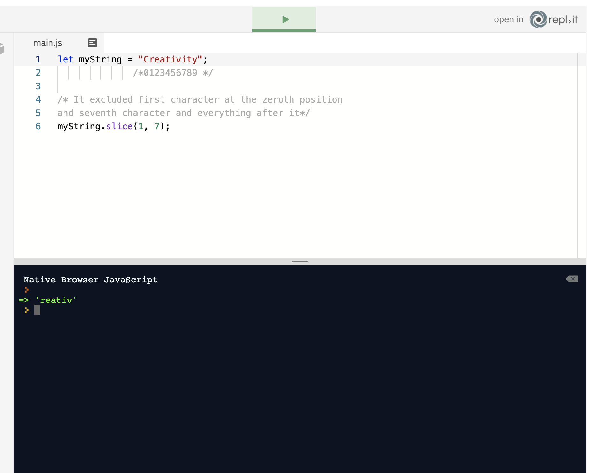
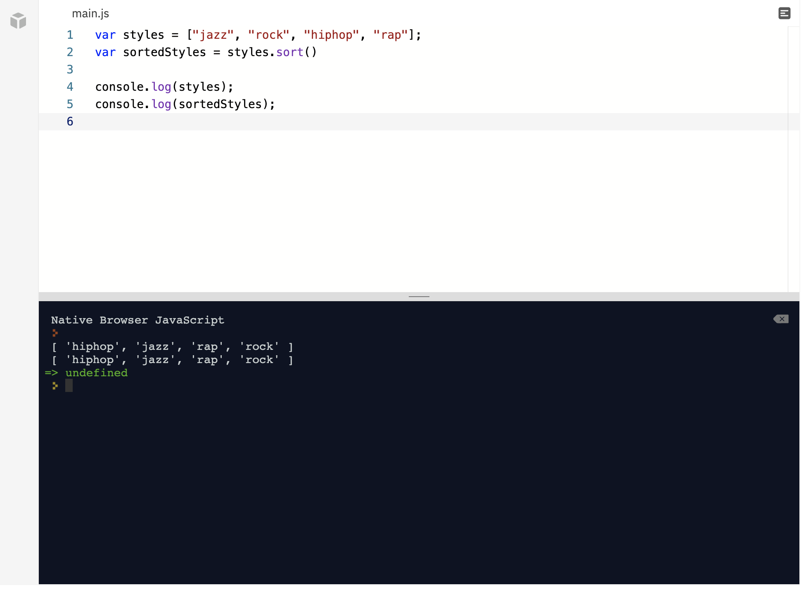
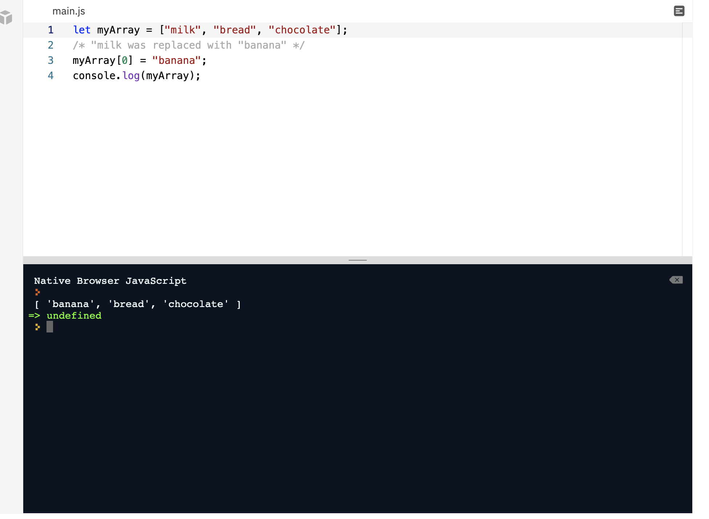
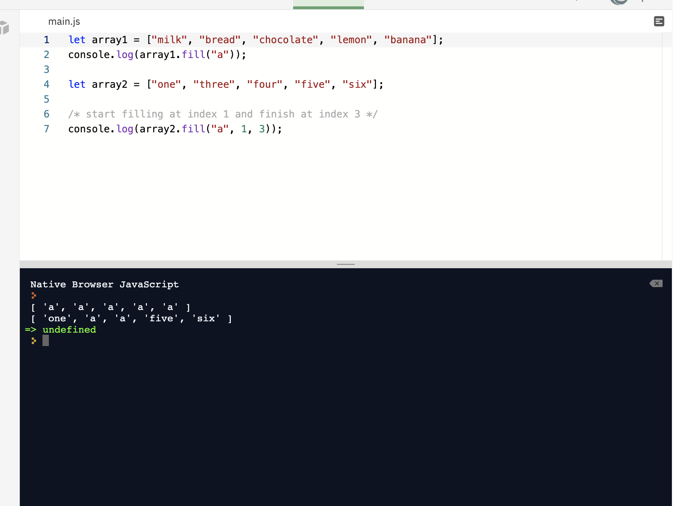

Question
So far you've learned to construct a simple array, and later you'll learn how to manipulate arrays using many different array methods. In the mean time though, it would be helpful to know how to navigate an array and be able to access a certain item from it. To do this, you might recall learning in the Arrays lesson that each array item has an index, which corresponds to its position in the array. It's worth noting that in JavaScript (and many other languages), the first item of the array is always at index 0. Using the right notations and methods, you can access any array item or its index itself. Your challenge is to: Define an array containing the days of the week in all lowercase letters, beginning with sunday. Assign it to a variable, theWeek Use array index notation to access the fourth day of theWeek, and assign it to a variable, humpDay Use the correct array method as taught in the module to access the index of wednesday, and assign its index to a variable, humpDayIndex Requirements: All variables must be defined properly and have the correct values If you're stuck, the Arrays lesson - specifically the Arrays/Array Indices units - will give you everything you need to succeed. Be sure to submit and compare your answer with the model solution (only available to view after you click submit). Enjoy!
// Define your variables here:
let theWeek =['sunday', 'monday', 'tuesday', 'wednesday', 'thursday', 'friday', 'saturday'];
let humpDay = theWeek[3];
let humpDayIndex = theWeek.indexOf('wednesday');
// These lines will log your variables to the console:
console.log(theWeek);
console.log(humpDay);
console.log(humpDayIndex);
are different actions for arrays used to change arrays in some way
yourArray.nameOfTheMethod(argument);
yourarray(THEARRAY-list of items).nameofmethod(Push, pop etc) argument (add take away etc)
We are not going to be able to look at all the methods, only the basic ones. Methods are actions that can be performed on objects. Some methods also return a value as well as perform an action. Let's say you want to add more items to an array. You created your grocery list, you thought you were done, but then you remembered to add one more item. How can you do this in JavaScript? Easy peasy. Just use the push method: What if you also needed to know the length of the array when you add to the array using the push method? Well, you can use the return value from the push method and assign it to a variable, as the push method not only performs an action, it is one of the methods that have a return value as well. Let's look at some examples below.
let myArray = ["milk", "bread", "chocolate"];
// Here we perform an action on myArray, we add juice to myArray
myArray.push("juice");
// We can see that myArray now contains juice and the length of the myArray has increased by one
console.log('myArray:', myArray);
// This time lets also use the return value when using the push method
// Notice all you need to do is declare a variable and assign it the value returned from myArray.push('Tea')
let something = myArray.push('Tea');
console.log('myArray:', myArray);
console.log('arrayLength:', something);
Cool, right? Hm, but wait a minute. Didn’t you buy juice yesterday? Now we have to remove it after all. Easy peasy again. Just pop it out. Yep, the pop() method removes the last item from an array: As the pop method also returns a value (The item removed from the array) you can store this item in a variable. Take a look at the examples below, and you will see using the return value for the pop method is done in the same manner as was done for the push method above.
// Lets use the pop method without storing the retun value for the first example
let myArray = ["milk", "bread", "chocolate", "juice"];
myArray.pop();
// As you can see when you console.log myArray the 'juice' is removed
console.log('myArray', myArray);
// Now lets remove the 'chocolate' and use the return value of the pop method as well.
// As you can see you do this the very same way as was done for the push method.
// And this time we store the item that was removed in a variable named popItem
let popItem = myArray.pop();
console.log('myArray:', myArray);
console.log('popItem:', popItem)
array methods push n pop --
Array Methods - Required - Push & Pop: As you learned in the Array Methods lessons, arrays - like strings - have many methods that you can use to manipulate them and the data that they contain. Two of those methods are push() and pop(), and they are used to achieve some very common tasks when it comes to array manipulation: adding items to them and removing items from them! Your challenge is to: Create an array containing the numbers 1 through 5 in increasing order and assign it to a variable, oneToFive Use the push() method to push the number 7 into the array, and store the return value of the push() method, the length of the modified array, in a new variable, pushed Use the pop() method to pop out the last number from oneToFive and store the return value of the pop() method in a new variable, popped
// Create your variables here: let oneToFive = [1,2,3,4,5]; oneToFive.push(7); let pushed=oneToFive.push(); let popped= oneToFive.pop(); // This line will log your variables to the console console.log(oneToFive); console.log(pushed); console.log(popped);
these are different actions for arrays used to change the array in someway.
how to use it
yourArray.nameOfTheMethod(argument);
The shift() method removes the first item from an array. This method also returns a value, the item removed, which can be stored in a variable. While the unshift() method adds a new item to an array at the beginning. This method also returns a value, the new length of the array, and this value can be stored in a variable.
let myArray = ["milk", "bread", "chocolate", "juice"];
console.log('myArray before methods are used:\n', myArray);
/* shift removes the first item from an array */
myArray.shift();
console.log('\nmyArray has first item milk removed using shift():\n', myArray);
/* unshift adds a new item at the beginning of the array */
myArray.unshift("flour");
console.log('\nmyArray has flour added using unshift("flour"):\n', myArray);
// The return value of the shift method, returns the item removed.
// which can be stored in a variable.
let firstItem = myArray.shift();
console.log('\nmyArray:', myArray);
console.log('firstItem:', firstItem);
// The return value of the unshift method, returns the new length of the array
// which can be stored in a variable.
let lengthOfArray = myArray.unshift('milk');
console.log('\nmyArray:', myArray);
console.log('lengthOfArray:', lengthOfArray);
Array Methods - Required - Shift & Unshift: If you remember the push() and pop() methods from the Array Methods lessons, then the shift() and unshift() methods should be easy to remember too! With push() we push an item onto the end of an array, and pop() will pop the last item off the end of the array. The obvious requirement in any programming language then would be the opposite operations, pushing an item into the front of an array and removing the first item from the array. You can accomplish these, respectively, with unshift() and shift(). Your challenge is to: Create an array, oneToFive, which contains the values 1 through 5 in increasing order Push the number -1 onto the front of the array and store the return value of the method you used, the length of the modified array, in a variable, unshifted Remove the first item from the front of the array and store the return value of the method you used in a variable, shifted
let oneToFive = [1,2,3,4,5]; // correct syntax for the array next we need to add a number (-1) to the array, we use unshift - this is achieved by oneTwoFive.unshift(-1) explained: oneTwoFive is the array name then we use the .unshift() to add whatever we want into the array at the start. next: to return and save the value we use. let unshifted = oneToFive.unshift(); next we need to unshift.... oneTwoFive.unshift(); let unshifted=oneToFive.shift(); // This line will log your variables to the console console.log(oneToFive); console.log(unshifted); console.log(shifted);
how to reverse an array
yourArray.nameOfTheMethod(argument);
The reverse() method reverses the order of items in the array. The first item will be last, the last will be the first and so on:
The slice() method takes two arguments; the start point and end point. The end point is not included in the result. These two points represent indices in an array. Don’t forget that original array is not changed. Instead, slice method returns the result in the form of a new array. It doesn’t affect the original one:
The sort() method sorts the items in an array in ascending and alphabetical order. Unicode code points are used rather than the Roman/Arabic characters themselves. If you have several strings, sort method will sort them alphabetically. If there are numbers, they will be sorted from lowest to highest. However as unicode code points are used they are ordered by the first charcter in the number. Try adding 11 to the var numbers in the code example below:
dans notes on this, right... strings work sound - numbers will list 1,11,111,1111, no matter what. so not 1,2,3,4,5,6, as expected lowest to highest but lowest number 1.... all the 1's then all the 2's etc etc
let styles = ["jazz", "rock", "hiphop", "rap"]; console.log(styles.sort()); let numbers = [4,3,5,1,9,6,2,11,112]; console.log(numbers.sort()); will return: Native Browser JavaScript [ 'hiphop', 'jazz', 'rap', 'rock' ] [ 1, 11, 112, 2, 3, 4, 5, 6, 9 ] => undefined
note: An important thing to note is that using the sort() method on its own always changes the original array - even if we assign the result to a new variable. Have a look at the example below:
Notice that both the original array and the new array have been sorted. This is called array mutation. When we run the sort() method, it mutates the original array - even when we want the result to be stored in a new variable. How can we get around this? One way is using something called method chaining, which involves using two or more methods together. You may remember from a previous lesson that the slice() method returns a copy of the array. So, we can create a new, sorted array by chaining slice() and sort() together, as you can see in the following example:
Let’s look again at our grocery list. We had milk, bread and chocolate. But what if you wanted to add banana instead of milk. It would be silly first to shift milk and then unshift banana, right? It’s just too much work. And what if we wanted to replace bread with something else? How can we get to the item that is neither at the beginning nor it is at the end of an array. Brace yourself for a much simpler way. We simply select an item with the appropriate index and replace it with the data we want. Easy peasy!
With the ES6, the newest version of JavaScript, there is one more way to alternate the content of the current array. Meet the fill() method. It can take three arguments. The first one is the value that we want to put in the array, the second one is where to start filling and the last one where to stop filling:
Where to put, start and end filling the array
Array Methods - Required - Reverse: Another useful method for array manipulation is the reverse() method. It does what the name implies: reverses the order of the array. Your challenge is to: Define an array containing the numbers 1 through 5 in increasing order, and assign it to a variable, countUp Reverse the array and assign the result of the reverse() method to a new variable, countDown
remember reverse is destructive on the return - we need to employ let coundown = countup.slice().reverse()
// Define your variables here: let countUp = [1,2,3,4,5]; let countDown=countUp.slice().reverse(); // This will log your variables to the console: console.log(countUp); console.log(countDown); [ 1, 2, 3, 4, 5 ] [ 5, 4, 3, 2, 1 ] => undefined
Understanding how to organize, manipulate and extract pieces of data from data structures like arrays is one of the fundamental skills you'll need to master in order to work in modern software development. Data today is usually organized into objects like arrays, lists, dictionaries and other similar data structures which can be indexed, sorted, iterated over, and manipulated. It's provided to developers via APIs which are often used to create data visualization sites or perform some sort of analysis on the data. If it's not obvious by now, as a developer in a data driven world you need to know how to work with data! In the code window we've created a variable, countries, which contains an array of every country in the world (195 in total). For the start of a data analysis project, you've been asked take three samples of 50 countries each, starting at country 50, country 75, and country 100, and organize them each alphabetically. These subsets will be used in the larger codebase to determine various statistics about the chosen countries. Your challenge is to: Extract 50 countries starting with country 50 and assign them to a variable, fiftyFromFifty Extract 50 countries starting with country 75 and assign them to a variable, fiftyFromSeventyFive Extract 50 countries starting with country 100 and assign them to a variable, fiftyFromOneHundred Sort fiftyFromFifty and fiftyFromOneHundred alphabetically and store them in variables, sortedFromFifty and sortedFromOneHundred, respectively Sort fiftyFromSeventyFive in reverse alphabetical order and store it in a variable, sortedFromSeventyFive
// This array will be used in your code: let countries = ["Papua New Guinea", "Lebanon", "Suriname", "Cyprus", "India", "Turkmenistan", "Oman", "Bhutan", "Honduras", "Botswana", "Kiribati", "Maldives", "Burundi", "Venezuela", "Guatemala", "Micronesia", "Samoa", "Canada", "Comoros", "Palestine State", "Bangladesh", "South Sudan", "Georgia", "Mauritius", "Hungary", "Brunei", "Iraq", "Antigua and Barbuda", "Switzerland", "Malaysia", "Ireland", "France", "San Marino", "Palau", "Tuvalu", "Kuwait", "China", "Togo", "Cameroon", "Lithuania", "Solomon Islands", "Armenia", "Bulgaria", "Guyana", "Jamaica", "Israel", "Tunisia", "Malawi", "Monaco", "Romania", "Sweden", "Holy See", "Tanzania", "Estonia", "Belize", "South Korea", "Singapore", "Guinea-Bissau", "Yemen", "Spain", "Tonga", "Namibia", "Seychelles", "Bolivia", "Congo (Congo-Brazzaville)", "North Korea", "Haiti", "Cuba", "Greece", "Ecuador", "Libya", "Bahamas", "Cabo Verde", "Germany", "Liberia", "Australia", "Italy", "Angola", "Central African Republic", "Paraguay", "Saudi Arabia", "Fiji", "United States of America", "Somalia", "Philippines", "Ghana", "New Zealand", "Portugal", "Algeria", "United Arab Emirates", "Peru", "Finland", "Serbia", "Andorra", "Belgium", "Azerbaijan", "Sri Lanka", "Tajikistan", "Dominica", "Nepal", "Morocco", "Marshall Islands", "Rwanda", "Mali", "Czech Republic", "Poland", "Iran", "Bosnia and Herzegovina", "Vanuatu", "Gabon", "Argentina", "Equatorial Guinea", "Montenegro", "Denmark", "Niger", "Qatar", "Madagascar", "Cambodia", "Liechtenstein", "Moldova", "Benin", "Slovenia", "Malta", "Indonesia", "Colombia", "Mexico", "Albania", "South Africa", "Kenya", "Japan", "Grenada", "Burkina Faso", "Belarus", "Pakistan", "Barbados", "Afghanistan", "Uruguay", "Uzbekistan", "Côte d'Ivoire", "Viet Nam", "Mauritania", "Swaziland", "Lesotho", "Zambia", "Ethiopia", "Laos", "Sierra Leone", "Nauru", "Guinea", "Croatia", "Mongolia", "Thailand", "Sao Tome and Principe", "El Salvador", "Jordan", "Gambia", "Chad", "Saint Kitts and Nevis", "Syria", "Mozambique", "Brazil", "Austria", "Saint Vincent and the Grenadines", "Eritrea", "Iceland", "Timor-Leste", "Dominican Republic", "Saint Lucia", "United Kingdom", "Nigeria", "Uganda", "Trinidad and Tobago", "Myanmar (formerly Burma)", "Latvia", "Luxembourg", "Senegal", "Costa Rica", "Kazakhstan", "Turkey", "Slovakia", "Democratic Republic of the Congo", "Egypt", "Norway", "Nicaragua", "Macedonia (FYROM)", "Bahrain", "Chile", "Russia", "Panama", "Zimbabwe", "Sudan", "Netherlands", "Ukraine", "Djibouti", "Kyrgyzstan"]; // Define your subsets here. Ensure you don't modify the original list! let fiftyFromFifty = countries.slice(49,99); let fiftyFromSeventyFive = countries.slice(74,124); let fiftyFromOneHundred = countries.slice(99,149); // Sort your subsets here. Ensure that you don't modify the original subsets! let sortedFromFifty= fiftyFromFifty.slice().sort(); let sortedFromOneHundred =fiftyFromOneHundred.slice().sort(); let sortedFromSeventyFive = fiftyFromSeventyFive.slice().sort().reverse(); // These lines will log your variables to the console: console.log(fiftyFromFifty); console.log(fiftyFromSeventyFive); console.log(fiftyFromOneHundred); console.log(sortedFromFifty); console.log(sortedFromSeventyFive); console.log(sortedFromOneHundred);
why... because integers start at 0 not one, so move everything to the left one,